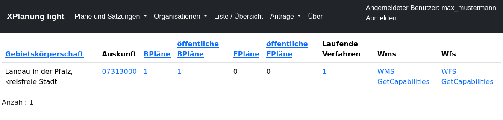
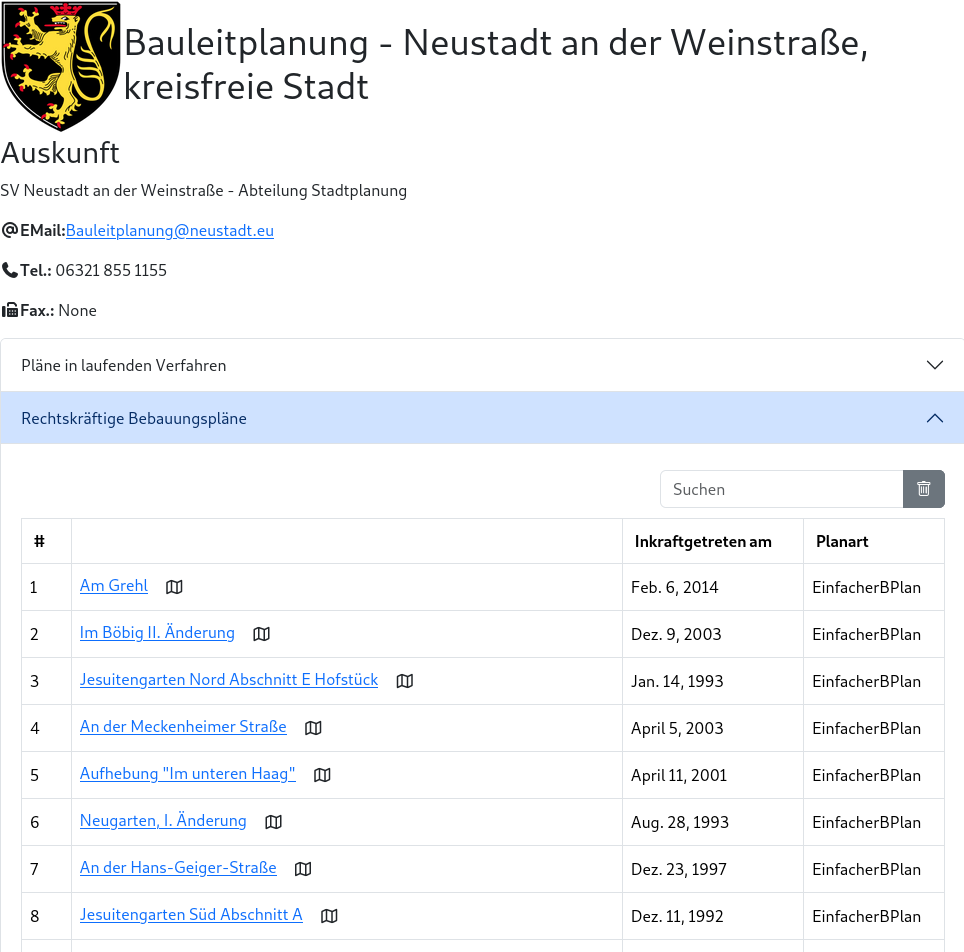
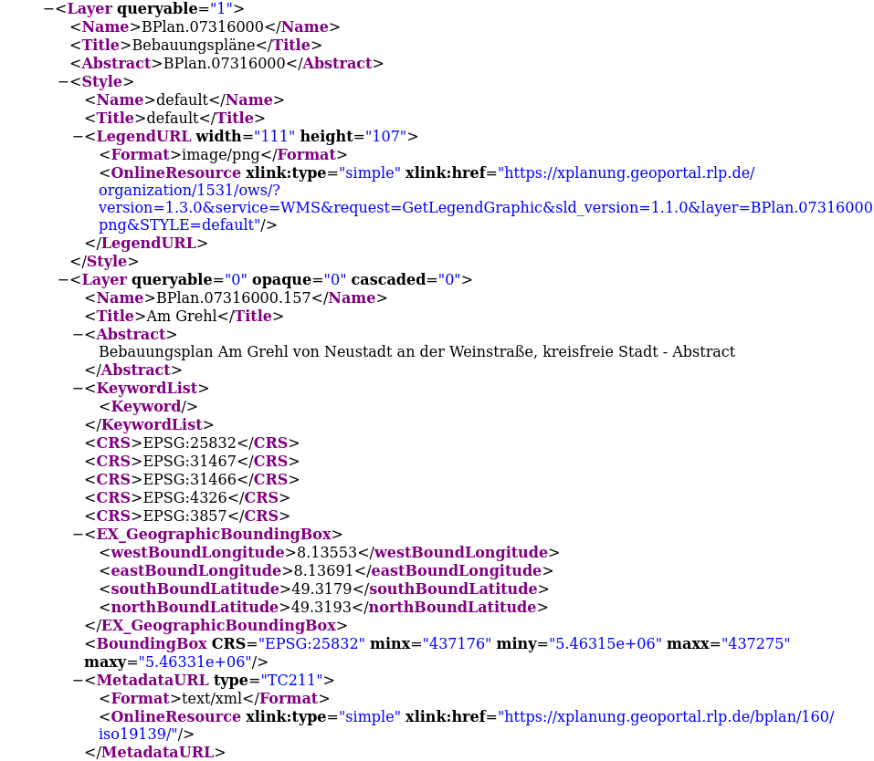
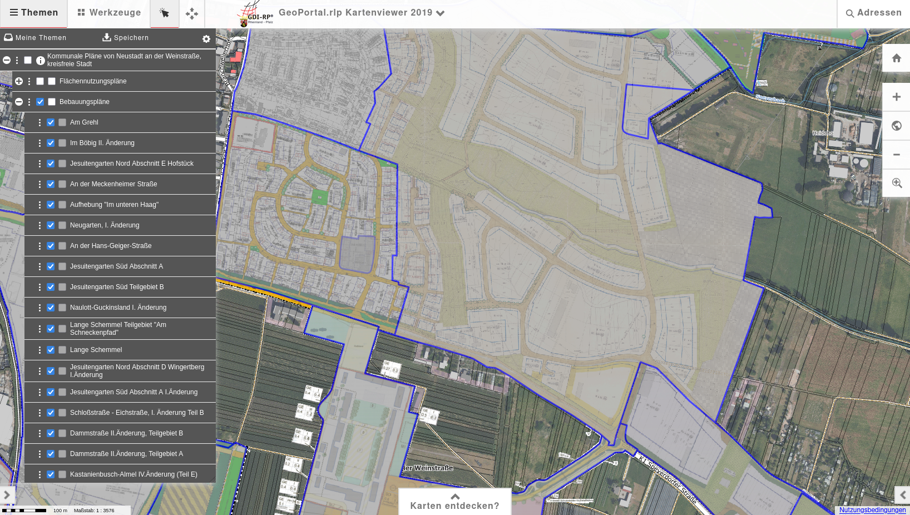
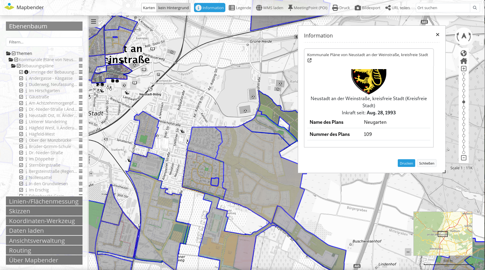
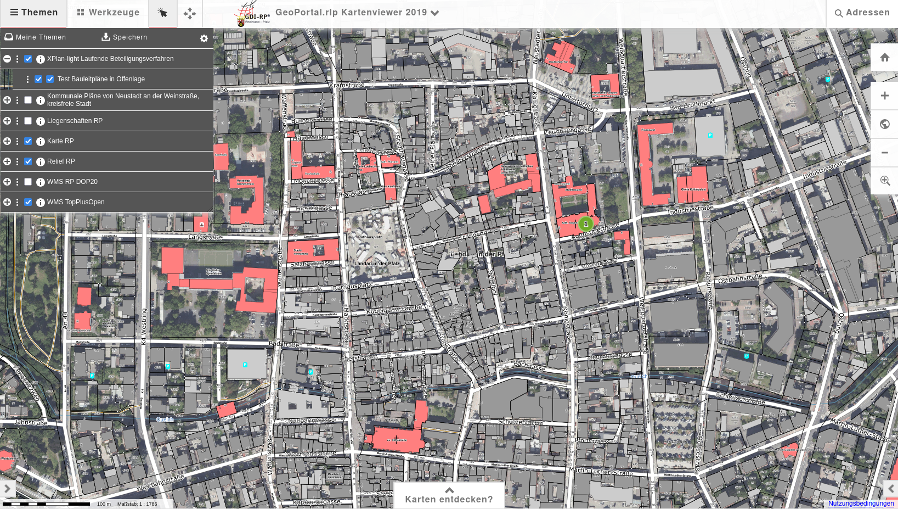

Schnittstellen
Unter Liste / Übersicht werden die wichtigsten Informationen für die einzelnen Gebietskörperschaften tabellarisch angezeigt. Die Spalte Auskunft verlinkt auf die automatisch generierte Online-Auskunft für die jeweilieg Gebietskörperschaft.

Auskunft
(Demo-Daten der Stadt Neustadt a. d. W.)

WebMapService-Schnittstelle
Capabilities
Auszug aus dem Capabilities-Dokument mit Metadaten am jeweiligen Layer (GDI-DE/INSPIRE Vorgabe)

WMS im GeoPortal.rlp

WMS im Mapbender4
Im folgenden Beispiel ist auch die Sachdatenabfrage dargestellt. Hier wird bei der Rückgabe der HTML-Seite über die WMS GetFeatureInfo Operation die Detailansicht aus dem Verwaltungssystem genutzt.

OGC Schnittstellen für Pläne im Verfahren
Für die Pläne, die sich in einem Beteiligungsverfahren befinden, gibt es eine eigene WMS/WFS Schnittstelle
